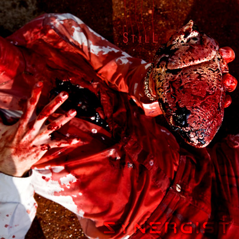

Still
by Synergist - Lyrics by CutcH*

so if the plan is moving forward
let's cut the brakes as we roll along
you know it's tricky pulling over
watch me crash into the wall
just leave me dying on the bloody floor
they always do
things have changed
it's so much brighter than it was before
and all these things were killing me
till I decided I should let it be
and as the time was moving onward
well I'd come to count on you one and all
and with the rest all safely wired
still you make me me take the fall
just leave me dying on the bloody floor
they always do
things have changed
it's so much brighter than it was before
and all these things were killing me
till I decided I should let it be
I need you to see
I'm on it
I breathe
I'm on it
perceive
I'm on it
I bleed
I'm on it, believe.
in the same way we've all been dying to rest here in peace
(still alive when I breathe)
in the same way they're all allying to keep you in need
(it's what I choose to perceive)
it's the same thing that keeps you off your knees
I know I've seen this all before
I bleed
I know I've been here once before
and I bleed just to see inside of me
I know I must be doing something wrong
but I've been dying to make you see
see me dying on the floor
the angels passing over bloody doors
well they always do
the same thing
but so much brighter than it was before
and all these things were killing me
till I decided I should let it be
I let it be
*CutcH is Craig McCutcheon |